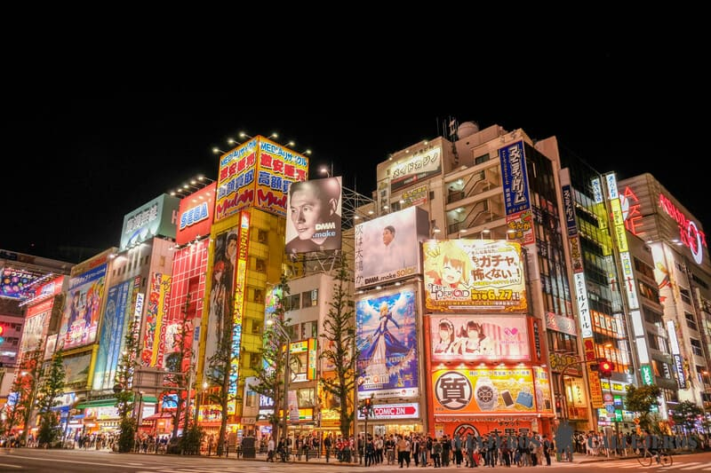
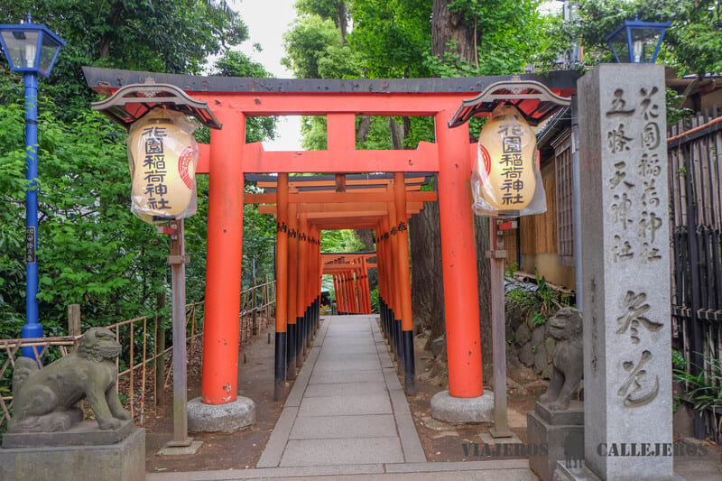
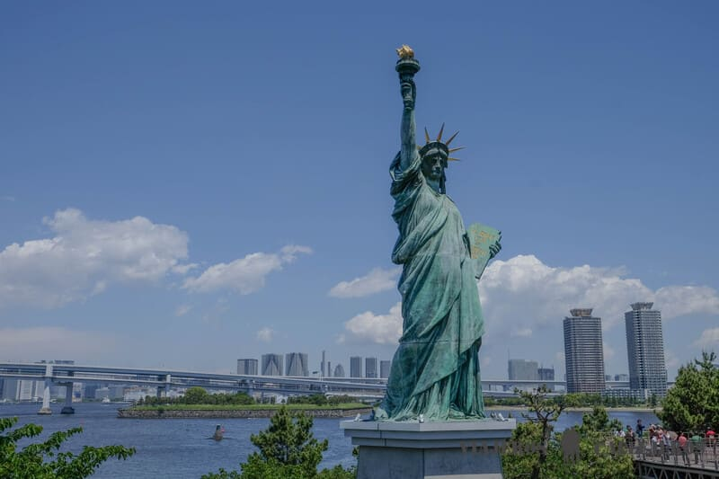
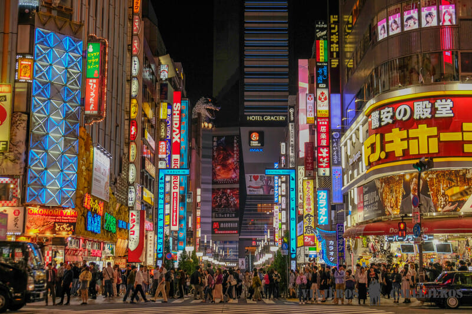
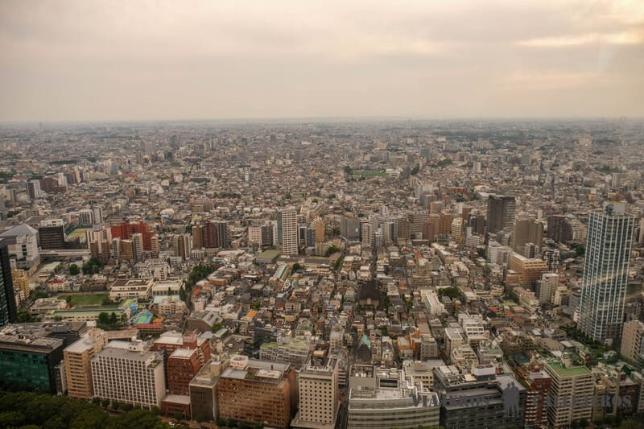

Esta lista de los mejores lugares que visitar en Tokio te servirá para diseñar una ruta con la que no te perderás nada importante de una de las ciudades más interesantes del mundo.
Conocida por sus increíbles punto de interés y por ser una ciudad en permanente movimiento, Tokio es un destino perfecto al que dedicar unos 4 o 5 días visitando durante el día diferentes barrios, parques, mercados o templos y acabar la jornada paseando entre neones y carteles publicitarios en barrios como Akihabara, Shinjuku o Shibuya, en los que podrás adentrarte en el Tokio más fascinante y futurista.
Debes tener en cuenta que la mejor forma de desplazarte por Tokio es utilizando su eficaz y extensa red de metro, parecida a una gran ciudad subterránea, con la que podrás llegar a todos los atractivos turísticos y puntos importantes de la ciudad. Aunque hay más opciones, nuestra recomendación es que te descargues la tarjeta Pasmo en tu móvil, que puedes ir recargando de forma fácil y cómoda, para pagar el transporte. Otra opción que puede resultarte rentable es comprar la tarjeta para turistas, que sirve para 24, 48 o 72 horas e incluye viajes ilimitados en metro (tren no) y que se vende en las oficinas de turismo.
Otro aspecto a tener en cuenta al viajar a Japón, especialmente a Tokyo, es la gastronomía. Y es que probar la extensa y variada cocina japonesa con deliciosos manjares como el sushi, el sashimi, el ramen, el okonomiyaki, la tempura o el tonkatsu, entre otros muchos, además de hacer las delicias de tu paladar será otra forma de adentrarte en una cultura increíble en la que los sabores, los olores y el umami, siempre están presentes.
Basándonos en las varias veces que hemos visitado esta ciudad, después de las que hemos publicado y actualizado esta guía de Tokio incluida en la guía de Japón, hemos realizado una selección de los que pensamos, son los 17 lugares que ver en Tokio imprescindibles. ¡Empezamos!
1. Akihabara
Akihabara, conocido como el barrio electrónico, es uno de los lugares que visitar en Tokio imprescindibles. Conocido por ser el lugar de reunión de miles de seguidores del manga, el anime, la electrónica y los videojuegos , aquí podrás encontrar cualquier tipo de producto que busques, por muy sofisticado o raro que te parezca.
Es importante tener en cuenta que, aunque este tipo de artículos puedes encontrarlos en otros barrios de Tokio, el número de tiendas que se concentran en los alrededores de la estación de Akihabara y la calle principal Chuo-Dori, es incomparable. Eso, unido al ambiente que se crea alrededor, hacen de Akihabara uno de los lugares más especiales de la ciudad al que te recomendamos dedicar mínimo unas horas.
Aunque las tiendas están abiertas todos los días, si puedes elegir un momento para ir, nuestra recomendación es que vayas a Akihabara en domingo o un día festivo y especialmente, ya que es durante estos momentos cuando las calles se convierten en peatonales y podrás disfrutar mucho más de la experiencia de verte rodeado de numerosos carteles publicitarios y luces de neón. Si además vas por la tarde, un poco antes de la puesta de sol para ver las dos versiones del barrio, prepárate para alucinar con los edificios iluminados y un ambiente que parece sacado de una película.
Además de lo comentado anteriormente, otro de los motivos por los que Akihabara también es conocido es por sus maid cafes, cafeterías donde las camareras van disfrazadas de sirvientas, que te llevan al lado más friki del barrio.
Otras experiencias diferentes que puedes disfrutar en esta zona son las de dormir en un hotel cápsula o hacerte fotos en un «Cosplay Purikura«, con filtros especiales en los que parecerá que sales de un cómic o una serie manga.
Una buena opción para conocer las curiosidades y no perderte nada importante de Akihabara es reservar este tour por el Tokio más friki.
Se puede llegar fácilmente al barrio de Akihabara con varias líneas como la JR Yamanote, JR Keihin-Tohoku, JR Sobu (todas incluidas en el JR Pass) o la línea de metro Hibiya y el Tsukuba Express, no incluidas en el JRP.
Akihabara
2. Parque Ueno, uno de los lugares que visitar en Tokio
El parque Ueno, el más popular de Tokio, en el que podrás pasear entre estanques, museos y templos, es uno de los lugares que ver en Tokio más bonitos.
Aunque todo el parque merece ser visto, uno de nuestros lugares favoritos del parque es el estanque Shinobazi, que se divide en tres partes: la de los lotos, barcos y cormoranes, y que tiene como gran reclamo el templo Benten-do, situado en el centro, en una pequeña isla. Otros lugares interesantes del parque Ueno son el Santuario Toshogu, la pagoda de cinco pisos, el Templo Kiyomizu Kannon-do y el Jomyoin, la estatua de Saigo Takamori y el Gran Buda de Ueno.
Además de todos estos atractivos, dentro del parque se encuentra el Museo Nacional de Tokyo, el más antiguo y más grande del país, en el que podrás repasar la historia de Japón a través de los numerosos objetos que se exponen. El museo abre de martes a domingo de 9h30 a 17h. Como recomendación, para terminar la ruta puedes dar un paseo por la calle Ameyoko que te llevará hasta el barrio de Akihabara, donde acabar la jornada entre luces de neón.
Ameyoko, popular calle de Tokio, se convierte todos los días desde las 10 de la mañana a las 8 de la tarde, en un gran mercado lleno de tiendas de todo tipo y puestos callejeros de comida. Para llegar a la estación de Ueno tienes la línea JR Yamanote (incluidas en el JR Pass) y las líneas de metro Hibiya y Ginza.
Es importante tener en cuenta que, aunque cualquier momento es bueno para visitar Ueno, este parque público se viste de gala durante la floración del cerezo en primavera, momento perfecto para viajar a Japón.
Ueno
3. El templo Sensoji
Sensoji, nuestro templo favorito y el más antiguo de la ciudad, es otro de los lugares que visitar en Tokio imprescindibles.
La mejor forma para entrar en este templo budista, situado en el barrio de Asakusa, es cruzar su impresionante puerta Kaminarimon, en la que destaca un enorme farolillo de color rojo y unas estatuas de dioses a cada lado, que la han convertido en una de las fotos típicas de la ciudad.
Algo a tener en cuenta es que suele haber mucha gente, por lo que te recomendamos llegar muy pronto (casi al amanecer) si no quieres verte rodeado de una multitud.
En el interior del Templo Sensoji destaca la bonita pagoda de cinco pisos y el salón principal Hondo, además de varios salones, santuarios, campanas, puertas, templos, estatuas y un jardín que harán las delicias de todo viajero.
Además, junto al templo, entre las puertas Kaminarimon y Hozomon se encuentra la calle Nakamise, una de las calles comerciales más antiguas de todo Japón, en la que puedes disfrutar de un agradable paseo por sus 250 metros de calle y más de 90 tiendas, que te mostrarán todo el abanico de souvenirs que puedes llevarte de recuerdo de tu viaje.
Para terminar la visita al barrio puedes acercarte a la orilla del río Sumida por la calle Asakusa para observar el edificio Asahi Beer Hall, sede de la cervecera Asahi, con forma de jarra de cerveza, y la llamativa escultura Flamme D’Or, conocida popularmente como el «mojón dorado».
Para tener una perspectiva única de este templo y los alrededores te aconsejamos subir a la última planta del Centro de Información Turística de Asakusa.
Una buena opción para no perderte nada del barrio de Asakusa es reservar este free tour por el barrio.
Para llegar a la parada de la estación de Asakusa, situada cerca del templo, puedes coger la línea JR Yamanote desde la estación de Tokio o la JR Chuo desde la de Shinjiku (incluidas en el JR Pass). Tienes que hacer transbordo en la estación de Kanda para pasar a la línea de metro de Ginza.
Otra opción es coger el water bus de la línea Sumida River.
- Horario de visita del salón principal: todos los días de 6h a 17h; el resto del templo está siempre abierto.
Templo de Sensoji, uno de los lugares que visitar en Tokio
4. Tokyo Skytree
Cerca de Asakusa, en el barrio de Sumida, se encuentra la Tokyo Skytree, una torre de telecomunicaciones inaugurada en el 2012 que está considerada la estructura más alta de Japón con sus 634 metros de altura.
El primer mirador (Plataforma Dembo) se sitúa a 350 metros de altura, y puedes llegar a él en menos de un minuto con ascensor, mientras que el segundo mirador (Galería Tembe) es el más alto de Tokio con sus 450 metros de altura y unas vistas de vértigo. Puedes reservar la entrada sin colas aquí con antelación.
Al bajar del mirador y si tienes algo de tiempo extra, puedes dedicarlo al Tokyo Solamachi, un complejo comercial situado a los pies de la torre y con más de 300 tiendas, cafés y restaurantes.
- Horario de visita: todos los días de 8h a 22h.
Tokio Skytree
5. Odaiba, una de las zonas que visitar en Tokio
Odaiba, una isla artificial situada en la bahía de Tokio y conectada con la ciudad por el largo puente Rainbow, es otro de los lugares imprescindibles que ver en Tokio.
Aunque a día de hoy no tiene tanto tirón turístico como hace unos años, sin duda, eta isla es un buen lugar para pasar parte de la tarde disfrutando de sus atracciones, centros comerciales y restaurantes. Además, aquí podrás ver una pequeña réplica de la Estatua de la Libertad, un Gundam a tamaño real delante del DiverCity, visitar el museo interactivo teamLab Borderless (temporalmente cerrado) y terminar la jornada viendo la puesta de sol desde la tranquila playa de Odaiba.
La mejor manera de llegar a Odaiba es desde el barrio de Asakusa, con uno de los cruceros futuristas que recorren el río Sumida hasta la isla. Puedes reservar con antelación este crucero o este que incluye cena tradicional japonesa Yakatabune.
Para la vuelta te aconsejamos coger la línea de metro sin conductor Yurikamome. Recuerda situarte en la parte delantera para disfrutar de las vistas de esta parte de Tokio. ¡Experiencia inolvidable!
Odaiba
6. Mercado de pescado de Toyosu
El Mercado de pescado de Toyosu, que ha sustituido al antiguo y emblemático mercado de Tsukiji (cerró en noviembre del 2018), es otro de los lugares que ver en Japón más increíbles.
Situado en la isla artificial de Toyosu, en plena bahía de Tokio, cerca de Odaiba, este nuevo mercado conserva la tradición de Tsukiji, pero al mismo tiempo es mucho más grande, moderno y accesible, tanto para comerciantes como para los miles turistas que lo visitan cada día.
Además, dispone de varias pasarelas y miradores para ver la famosa subasta de atún, sin molestar a los trabajadores, algo que lamentablemente, sucedía demasiado en el antiguo mercado. La subasta se realiza cada día en el pabellón 7, de 5:h30 a 6h30 de la mañana. Para acceder a un mirador exclusivo situado en la misma planta de la subasta tienes que reservar plaza desde esta página.
Otro pabellón que puedes visitar es el 6, en el que se produce la venta a los minoristas de las más de 10.000 toneladas de pescado y marisco provenientes de todos los mares del mundo, aunque en este caso los miradores dejan un poco que desear.
Otra de las mejores cosas que hacer en Tokio, que te recomendamos no perderte, es probar el delicioso sushi fresco en cualquiera de los numerosos puestos situados en la entrada del mercado. Y, aunque pienses que a esa hora de la mañana puede resultar raro comer sushi, te aseguramos que todo es empezar. ¡La experiencia merece mucho la pena!
Para llegar a este mercado tienes que coger la línea Yurikamome que funciona sin conductor y sale de la estación Shimbashi (línea Yamanote), para bajarte en la parada Shijo-mae.
Si dispones de tiempo, cerca de este mercado, se encuentra el TeamLab Planets, un museo inmersivo de arte en el que tendrás que sumergirte hasta las rodillas en agua (te prestan unos pantalones cortos si no los llevas) y donde puedes realizar fotos que llenarán de likes tu Instagram. Es importante tener en cuenta que, aunque tiene muy buenas reseñas, mucha gente que lo ha visitado comenta que está muy masificado y eso, empaña un poco la experiencia.

Mercado Toyosu
Seguro de viaje para Japón
pSi vas a viajar a Japón nada mejor que contar con un buen seguro de viaje y más en un destino como este, en el que los servicios sanitarios son muy elevados, pudiendo costar una simple visita al médico 500 dólares y varios miles cualquier operación. Nosotros siempre viajamos asegurados con Heymondo, con quien llevamos un seguro totalmente adecuado a las necesidades que vayamos a tener en el viaje. Contratando aquí tu seguro con Heymondo, sólo por ser lector de Viajeros Callejeros, tienes un 5% de descuento.7. Palacio Imperial, uno de los lugares que ver en Tokio
Después de visitar el increíble mundo subterráneo que se esconde debajo de la enorme estación de Tokio con pasadizos temáticos como Character Street, con 21 tiendas de artículos de personajes de anime y manga, y Ramen Street, puedes acercarte en unos 10 minutos a pie al Palacio Imperial, uno de los lugares más importantes que visitar en Tokio.
Residencia del Emperador de Japón y construido sobre el antiguo Castillo de Edo, de este palacio no se puede visitar el interior aunque sus cuidados y preciosos jardines te enamoraran a primera vista, sobre todo en primavera con la floración del cerezo y en otoño con los colores rojizos y ocres de sus hojas. Aunque pasear por todo el recinto es una auténtica maravilla, entre sus puntos más fotogénicos se encuentra el de los puentes Nijubashi, un lugar que no puedes perderte.
Hay que tener en cuenta que los Jardines del Este, abren a las 9 de la mañana, excepto los lunes, viernes y ocasiones especiales como el día de Año Nuevo.
Una interesante opción para conocer la historia de Tokio es reservar esta visita guiada en español o este tour privado en español, perfecto para grupos.

Palacio Imperial de Tokio
8. Torre de Tokio
La Torre de Tokio, con 333 metros de altura e inspirada en la arquitectura de la Torre Eiffel, es el mirador más famoso que ver en Tokio.
Desde el espacio FootTown, un edificio de cuatro plantas situado justo debajo de la torre, donde puedes comer, comprar souvenirs y visitar varios museos, subirás a un ascensor que te llevará en pocos segundos al mirador principal, compuesto de dos pisos y ubicado a 150 metros de altura.
Si quieres disfrutar de unas vistas todavía más impresionantes, de 360 grados de toda la ciudad de Tokio, puedes pagar un poco más y subir al mirador Top Deck, a 250 metros de altura. Puedes reservar la entrada desde esta página.
Después de la visita puedes pasear por el tranquilo parque Shiba con vistas a rascacielos y visitar el templo Zojoji, otro de los imprescindibles de Tokio.
Una buena opción para conocer muchos de los imprescindibles de Tokio sin tener que utilizar metro es reservar el autobús turístico que dispone de audioguía en español.
- Horario de visita: todos los días de 9h a 23h.
Torre de Tokio
9. Conocer Shinjuku, una de las cosas que hacer en Tokio
La mayoría de lugares que visitar en Tokio se concentran alrededor de las estaciones de tren, como también es el caso del barrio de Shinjuku, nuestro preferido de la ciudad.
Con muchos atractivos destacables, cerca de la estación se encuentra una zona de ocio que compite con Akihabara en número de neones y tiendas de electrónica donde además encontrarás desde salas recreativos como el típico Pachinko a edificios de varios pisos de karaokes además de enormes centros comerciales y algunos de los mejores restaurantes donde comer en Tokio como Gyukatsu Motomura o el Gyopao Gyoza, dos de nuestros preferidos.
Como recomendación extra, si estás en esta zona después de la puesta de sol (algo muy recomendable), una ruta interesante de noche por el barrio, incluiría el barrio rojo de Tokio, conocido como Kabukicho, el edificio TOHO Cinemas Shinjuku del que sale una cabeza de Godzilla y los callejones Omoide Yokocho y Golden Gai, además de la espectacular pantalla 3D ubicada en la curva Cross Space, que cada 15 minutos muestran un anuncio con un gato de protagonista.
Y si en algún momento acabas un tanto estresado, un buen lugar para desconectar del bullicio de gente y ruido de Shinjuku, es el bonito parque Shinjuku Gyoen, donde podrás descansar antes de seguir con la ruta.
Para conocer sus curiosidades y no perderte nada importante puedes reservar este free tour en español.
Para llegar a la estación de Shinjuku, la más transitada del mundo, puedes coger las líneas Yamanote, Chuo, Saikyo, Shonan-Shinjuku, Keihin-Tohoku (incluidas en el JR Pass) o las líneas de metro Seibu, Higashi, Nishi y Oedi.
Barrio de Shinjuku, uno de los lugares que visitar en Tokio
10. Edificio del Gobierno Metropolitano de Tokio
Shinjuku también concentra la parte administrativa de la ciudad, con imponentes rascacielos y grandes hoteles como el Park Hyatt Tokyo, que tuvo un especial protagonismo en la película Lost in Translation.
Aunque su edificio más famoso y otro de los imprescindibles que ver en Tokio es el Edificio del Gobierno Metropolitano, diseñado por el prestigioso arquitecto japonés Kenzo Tange y conocido como Tocho. Este edificio tiene dos torres gemelas de 243 de metros con dos excelentes miradores panorámicos situados cada uno a 202 metros, con la diferencia del resto de miradores de la ciudad en que son gratuitos. El mirador de la torre norte abre de 9h30 a 23h y el de la torre sur cierra a las 17h30.
Edificio metropolitano del Gobierno de Tokio